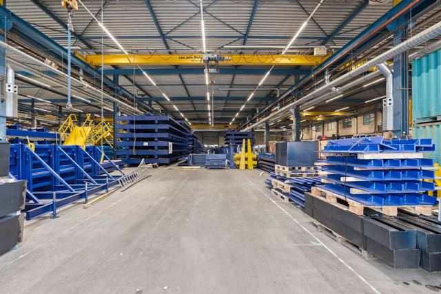

Metalworking, steel construction & mechanical engineering
Best matchThe hall was built for this kind of work: crane tracks, three-phase power, compressed air, a concrete floor and environmental category 4.2. The existing fit-out matches these needs directly.
For example: steel structures, sheet-metal working and welding companies, machine building and overhaul, fabrication workshops, fencing and staircase construction.
Why it fits
- Crane tracks for heavy workpieces
- Environmental category 4.2 for noise and welding
- 15 m bays: sawing, welding, assembly and dispatch kept separate
- Changing rooms and canteen for workshop staff
Points to consider
- Lifting capacity of crane tracks and their use by arrangement
- Need more than 183 kW? Apply for a grid capacity upgrade in good time
- Coating or blasting: an additional environmental permit is required